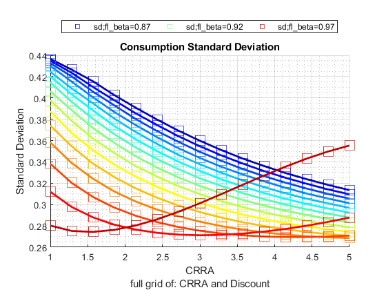
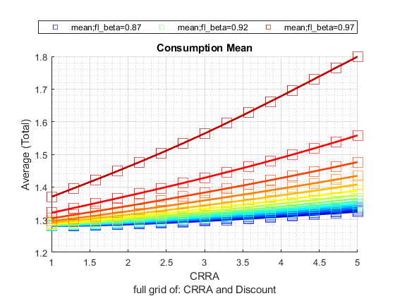
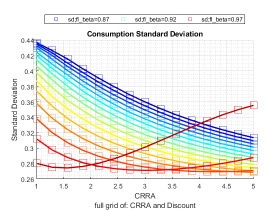
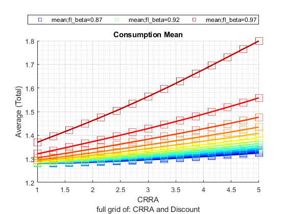

Analyze Distributional Results
back to Fan's Dynamic Assets Repository Table of Content.
Contents
function [tb_outcomes, support_map] = ff_az_test_analyze(varargin)
FF_AZ_TEST_ANALYZE post solution simulation
Simulate the model along various dimensions, and produce graphical outputs to show aggregate/distributional statistics.
@ar_it_plot_sets array integer array of which statistics graphs to generate, see line 128. Could add additional statistics to that conditional list.
@param st_simu_type string cross vs gridd simulation. cross: with (x,y), vary X fixing y, vary Y fixing x. grid: all (x,y) \in (X,Y)
- st_simu_type = 'c' for cross simulate, if 'c', then each array value of param_tstar_map container is simulated over one by one. So if there are two arrays associated with two keys in param_tstar_map with length N1 and N2, the total number of simulations equals to N1 + N2.
- st_simu_type = 'g' for grid simulate, if 'g', then all possible combinations of the arrays in param_tstar_map are used to create combinations of parameter values. So if there are two arrays with lengths N1 and N2, there will be N1*N2 number of simulations
- st_simu_type = 'r' for random simulate, if 'r', then should specify param_map('it_st_simu_type_g_seed') value. Only the minimum and the maximum values for each array in param_tstar_map matters. Based on these minimum and maximum, and also what is in param_map('it_st_simu_type_g_simun'). Random parameter values will be drawn.
@param it_size_type integer:
- it_size_type = 1 is quick grid
- it_size_type = 2 is standard grid
- it_size_type = 3 is denser grid
@param cl_st_param_keys cell string cell array container parameters that we are simulating over
@param param_map container parameter container
@param support_map container support container
@param param_tstar_map container map of arrays with keys that are parameter keys. This could be specified outside with array values to override defaults here.
@param param_desc_map container map of strings for each parameter key.
@param tb_outcomes table table of simulation outcomes for various statistics for each set of parameters. Columns are statistics, rows are outcome variables, groups of rows are different simulations.
@include
@seealso
- SPEED savings only overall benchmark speed testing: fsi_az_ds_vecsv_speed
- PREFERENCE savings only preference testing: fsi_az_ds_vecsv_pref
- PREFERENCE savings only preference testing cross: fsi_az_ds_vecsv_pref_cross
- SHOCK savings only shock testing: fsi_az_ds_vecsv_shock
- SHOCK savings only shock testing cross: fsi_az_ds_vecsv_shock_cross
- PRICE savings only wage and interest rate testing cross: adjust wage and savings rate fsi_az_ds_vecsv_price_cross
Default Parameter
ar_it_plot_sets = [1,2,4,5]; it_param_set = 9; [param_map, support_map] = ffs_az_set_default_param(it_param_set); support_map('bl_replacefile') = false; support_map('bl_graph_onebyones') = true; support_map('bl_display_graph_stats') = true;
Array Parameters
initiate empty map
st_simu_type = 'r'; % if false, simu full grid it_size_type = 2; cl_st_param_keys = {'fl_crra', 'fl_beta'}; param_tstar_map = containers.Map('KeyType','char', 'ValueType','any'); it_simu_vec_len = 5; param_tstar_map('fl_crra') = linspace(1, 5, it_simu_vec_len); param_tstar_map('fl_beta') = linspace(0.87, 0.97, it_simu_vec_len); param_desc_map = containers.Map('KeyType','char', 'ValueType','any'); param_desc_map('fl_crra') = {'CRRA'}; param_desc_map('fl_beta') = {'Discount'};
Default
default_params = {ar_it_plot_sets ...
st_simu_type it_size_type cl_st_param_keys ...
param_map support_map param_tstar_map param_desc_map};
Parse Parameters 1
override default set above if any parameters are updated
params_len = length(varargin);
[default_params{1:params_len}] = varargin{:};
ar_it_plot_sets = default_params{1};
st_simu_type = default_params{2};
it_size_type = default_params{3};
cl_st_param_keys = default_params{4};
param_map = [param_map; default_params{5}];
support_map = [support_map; default_params{6}];
param_tstar_map = [param_tstar_map; default_params{7}];
param_desc_map = [param_desc_map; default_params{8}];
Parse Parameters 2
params_group = values(support_map, ... {'bl_graph_onebyones', 'bl_display_graph_stats'}); [bl_graph_onebyones, bl_display_graph_stats] = params_group{:};
Cross-Simulate Model Along Parameters
[tb_outcomes, support_map, param_desc_map] = ff_az_test_gen( ... st_simu_type, it_size_type, cl_st_param_keys, ... param_map, support_map, param_tstar_map, param_desc_map);
----------------------------------------
----------------------------------------
xxxxxxxxxxxxxxxxxxxxxxxxxxxxxxxxxxxxxxxx
xxxxxxxxxxxxxxxxxxxxxxxxxxxxxxxxxxxxxxxx
Begin: Show all key and value pairs from container
CONTAINER NAME: SUPPORT_MAP
----------------------------------------
Map with properties:
Count: 48
KeyType: char
ValueType: any
xxxxxxxxxxxxxxxxxxxxxxxxxxxxxxxxxxxxxxxx
xxxxxxxxxxxxxxxxxxxxxxxxxxxxxxxxxxxxxxxx
----------------------------------------
----------------------------------------
pos = 1 ; key = bl_display ; val = false
pos = 2 ; key = bl_display_defparam ; val = false
pos = 3 ; key = bl_display_dist ; val = false
pos = 4 ; key = bl_display_final ; val = false
pos = 5 ; key = bl_display_final_dist ; val = true
pos = 6 ; key = bl_display_final_dist_detail ; val = false
pos = 7 ; key = bl_display_funcgrids ; val = false
pos = 8 ; key = bl_display_graph_stats ; val = true
pos = 9 ; key = bl_display_simu_stats ; val = true
pos = 10 ; key = bl_graph ; val = true
pos = 11 ; key = bl_graph_coh_t_coh ; val = false
pos = 12 ; key = bl_graph_funcgrids ; val = false
pos = 13 ; key = bl_graph_onebyones ; val = true
pos = 14 ; key = bl_graph_pol_lvl ; val = false
pos = 15 ; key = bl_graph_pol_pct ; val = false
pos = 16 ; key = bl_graph_val ; val = false
pos = 17 ; key = bl_img_save ; val = false
pos = 18 ; key = bl_mat ; val = false
pos = 19 ; key = bl_mat_test ; val = true
pos = 20 ; key = bl_post ; val = true
pos = 21 ; key = bl_profile ; val = false
pos = 22 ; key = bl_profile_dist ; val = false
pos = 23 ; key = bl_replacefile ; val = false
pos = 24 ; key = bl_time ; val = false
pos = 25 ; key = bl_timer ; val = true
pos = 26 ; key = it_display_every ; val = 20
pos = 27 ; key = it_display_final_colmax ; val = 12
pos = 28 ; key = it_display_final_rowmax ; val = 100
pos = 29 ; key = it_display_summmat_colmax ; val = 5
pos = 30 ; key = it_display_summmat_rowmax ; val = 5
pos = 31 ; key = st_img_name_main ; val = _default
pos = 32 ; key = st_img_path ; val = C:/Users/fan/CodeDynaAsset//m_az//solve/img/
pos = 33 ; key = st_img_prefix ; val =
pos = 34 ; key = st_img_suffix ; val = _p9.png
pos = 35 ; key = st_mat_name_main ; val = _default
pos = 36 ; key = st_mat_path ; val = C:/Users/fan/CodeDynaAsset//m_az//solve/mat/
pos = 37 ; key = st_mat_prefix ; val =
pos = 38 ; key = st_mat_suffix ; val = _p9
pos = 39 ; key = st_mat_test_name_main ; val = r
pos = 40 ; key = st_mat_test_path ; val = C:/Users/fan/CodeDynaAsset//m_az//test/ff_az_ds_vecsv/mat/
pos = 41 ; key = st_mat_test_prefix ; val =
pos = 42 ; key = st_mat_test_suffix ; val = _g12_cr_t2l10
pos = 43 ; key = st_matimg_path_root ; val = C:/Users/fan/CodeDynaAsset//m_az/
pos = 44 ; key = st_profile_name_main ; val = _default
pos = 45 ; key = st_profile_path ; val = C:/Users/fan/CodeDynaAsset//m_az//solve/profile/
pos = 46 ; key = st_profile_prefix ; val =
pos = 47 ; key = st_profile_suffix ; val = _p9
pos = 48 ; key = st_title_prefix ; val =
----------------------------------------
xxxxxxxxxxxxxxxxxxxxxxxxxxxxxxxxxxxxxxxx
Scalars in Container and Sizes and Basic Statistics
xxxxxxxxxxxxxxxxxxxxxxxxxxxxxxxxxxxxxxxx
i idx value
__ ___ _____
bl_display 1 1 0
bl_display_defparam 2 2 0
bl_display_dist 3 3 0
bl_display_final 4 4 0
bl_display_final_dist 5 5 1
bl_display_final_dist_detail 6 6 0
bl_display_funcgrids 7 7 0
bl_display_graph_stats 8 8 1
bl_display_simu_stats 9 9 1
bl_graph 10 10 1
bl_graph_coh_t_coh 11 11 0
bl_graph_funcgrids 12 12 0
bl_graph_onebyones 13 13 1
bl_graph_pol_lvl 14 14 0
bl_graph_pol_pct 15 15 0
bl_graph_val 16 16 0
bl_img_save 17 17 0
bl_mat 18 18 0
bl_mat_test 19 19 1
bl_post 20 20 1
bl_profile 21 21 0
bl_profile_dist 22 22 0
bl_replacefile 23 23 0
bl_time 24 24 0
bl_timer 25 25 1
it_display_every 26 26 20
it_display_final_colmax 27 27 12
it_display_final_rowmax 28 28 100
it_display_summmat_colmax 29 29 5
it_display_summmat_rowmax 30 30 5
----------------------------------------
xxxxxxxxxxxxxxxxxxxxxxxxxxxxxxxxxxxxxxxx
Strings in Container and Sizes and Basic Statistics
xxxxxxxxxxxxxxxxxxxxxxxxxxxxxxxxxxxxxxxx
i idx
__ ___
st_img_name_main 1 31
st_img_path 2 32
st_img_prefix 3 33
st_img_suffix 4 34
st_mat_name_main 5 35
st_mat_path 6 36
st_mat_prefix 7 37
st_mat_suffix 8 38
st_mat_test_name_main 9 39
st_mat_test_path 10 40
st_mat_test_prefix 11 41
st_mat_test_suffix 12 42
st_matimg_path_root 13 43
st_profile_name_main 14 44
st_profile_path 15 45
st_profile_prefix 16 46
st_profile_suffix 17 47
st_title_prefix 18 48
----------------------------------------
----------------------------------------
xxxxxxxxxxxxxxxxxxxxxxxxxxxxxxxxxxxxxxxx
xxxxxxxxxxxxxxxxxxxxxxxxxxxxxxxxxxxxxxxx
Begin: Show all key and value pairs from container
CONTAINER NAME: PARAM_MAP
----------------------------------------
Map with properties:
Count: 29
KeyType: char
ValueType: any
xxxxxxxxxxxxxxxxxxxxxxxxxxxxxxxxxxxxxxxx
xxxxxxxxxxxxxxxxxxxxxxxxxxxxxxxxxxxxxxxx
----------------------------------------
----------------------------------------
pos = 1 ; key = ar_param_keys_idx ;rown= 1 ,coln= 2
ar_param_keys_idx :mu= 1.5 ,sd= 0.70711 ,min= 1 ,max= 2
zi_1_c1 zi_2_c2
_______ _______
zi_1_r1 1 2
pos = 2 ; key = bl_loglin ; val = false
pos = 3 ; key = cl_st_param_keys ; val = fl_crra
pos = 4 ; key = fl_a_max ; val = 50
pos = 5 ; key = fl_a_min ; val = 0
pos = 6 ; key = fl_b_bd ; val = 0
pos = 7 ; key = fl_beta ; val = 0.94
pos = 8 ; key = fl_crra ; val = 1.5
pos = 9 ; key = fl_loglin_threshold ; val = 1
pos = 10 ; key = fl_nan_replace ; val = -9999
pos = 11 ; key = fl_r_save ; val = 0.025
pos = 12 ; key = fl_tol_dist ; val = 1e-05
pos = 13 ; key = fl_tol_pol ; val = 1e-05
pos = 14 ; key = fl_tol_val ; val = 1e-05
pos = 15 ; key = fl_w ; val = 1.28
pos = 16 ; key = fl_z_mu ; val = 0
pos = 17 ; key = fl_z_rho ; val = 0.8
pos = 18 ; key = fl_z_sig ; val = 0.2
pos = 19 ; key = it_a_n ; val = 750
pos = 20 ; key = it_maxiter_dist ; val = 1000
pos = 21 ; key = it_maxiter_val ; val = 1000
pos = 22 ; key = it_size_type ; val = 2
pos = 23 ; key = it_st_simu_type_g_seed ; val = 123
pos = 24 ; key = it_st_simu_type_g_simun ; val = 20
pos = 25 ; key = it_tol_pol_nochange ; val = 25
pos = 26 ; key = it_trans_power_dist ; val = 1000
pos = 27 ; key = it_z_n ; val = 15
pos = 28 ; key = st_analytical_stationary_type ; val = eigenvector
pos = 29 ; key = st_model ; val = az
----------------------------------------
xxxxxxxxxxxxxxxxxxxxxxxxxxxxxxxxxxxxxxxx
Matrix in Container and Sizes and Basic Statistics
xxxxxxxxxxxxxxxxxxxxxxxxxxxxxxxxxxxxxxxx
i idx rowN colN mean std min max
_ ___ ____ ____ ____ _______ ___ ___
ar_param_keys_idx 1 1 1 2 1.5 0.70711 1 2
----------------------------------------
xxxxxxxxxxxxxxxxxxxxxxxxxxxxxxxxxxxxxxxx
Scalars in Container and Sizes and Basic Statistics
xxxxxxxxxxxxxxxxxxxxxxxxxxxxxxxxxxxxxxxx
i idx value
__ ___ _____
bl_loglin 1 2 0
fl_a_max 2 4 50
fl_a_min 3 5 0
fl_b_bd 4 6 0
fl_beta 5 7 0.94
fl_crra 6 8 1.5
fl_loglin_threshold 7 9 1
fl_nan_replace 8 10 -9999
fl_r_save 9 11 0.025
fl_tol_dist 10 12 1e-05
fl_tol_pol 11 13 1e-05
fl_tol_val 12 14 1e-05
fl_w 13 15 1.28
fl_z_mu 14 16 0
fl_z_rho 15 17 0.8
fl_z_sig 16 18 0.2
it_a_n 17 19 750
it_maxiter_dist 18 20 1000
it_maxiter_val 19 21 1000
it_size_type 20 22 2
it_st_simu_type_g_seed 21 23 123
it_st_simu_type_g_simun 22 24 20
it_tol_pol_nochange 23 25 25
it_trans_power_dist 24 26 1000
it_z_n 25 27 15
----------------------------------------
xxxxxxxxxxxxxxxxxxxxxxxxxxxxxxxxxxxxxxxx
Strings in Container and Sizes and Basic Statistics
xxxxxxxxxxxxxxxxxxxxxxxxxxxxxxxxxxxxxxxx
i idx
_ ___
cl_st_param_keys 1 3
st_analytical_stationary_type 2 28
st_model 3 29
----------------------------------------
----------------------------------------
xxxxxxxxxxxxxxxxxxxxxxxxxxxxxxxxxxxxxxxx
xxxxxxxxxxxxxxxxxxxxxxxxxxxxxxxxxxxxxxxx
Begin: Show all key and value pairs from container
CONTAINER NAME: PARAM_TSTAR_MAP
----------------------------------------
Map with properties:
Count: 9
KeyType: char
ValueType: any
xxxxxxxxxxxxxxxxxxxxxxxxxxxxxxxxxxxxxxxx
xxxxxxxxxxxxxxxxxxxxxxxxxxxxxxxxxxxxxxxx
----------------------------------------
----------------------------------------
pos = 1 ; key = fl_a_max ;rown= 1 ,coln= 5
fl_a_max :mu= 65 ,sd= 11.8585 ,min= 50 ,max= 80
zi_1_c1 zi_2_c2 zi_3_c3 zi_4_c4 zi_5_c5
_______ _______ _______ _______ _______
zi_1_r1 50 57.5 65 72.5 80
pos = 2 ; key = fl_beta ;rown= 1 ,coln= 5
fl_beta :mu= 0.92 ,sd= 0.039528 ,min= 0.87 ,max= 0.97
zi_1_c1 zi_2_c2 zi_3_c3 zi_4_c4 zi_5_c5
_______ _______ _______ _______ _______
zi_1_r1 0.87 0.895 0.92 0.945 0.97
pos = 3 ; key = fl_crra ;rown= 1 ,coln= 5
fl_crra :mu= 3 ,sd= 1.5811 ,min= 1 ,max= 5
zi_1_c1 zi_2_c2 zi_3_c3 zi_4_c4 zi_5_c5
_______ _______ _______ _______ _______
zi_1_r1 1 2 3 4 5
pos = 4 ; key = fl_r_save ;rown= 1 ,coln= 5
fl_r_save :mu= 0.025 ,sd= 0.011859 ,min= 0.01 ,max= 0.04
zi_1_c1 zi_2_c2 zi_3_c3 zi_4_c4 zi_5_c5
_______ _______ _______ _______ _______
zi_1_r1 0.01 0.0175 0.025 0.0325 0.04
pos = 5 ; key = fl_w ;rown= 1 ,coln= 5
fl_w :mu= 1.25 ,sd= 0.11859 ,min= 1.1 ,max= 1.4
zi_1_c1 zi_2_c2 zi_3_c3 zi_4_c4 zi_5_c5
_______ _______ _______ _______ _______
zi_1_r1 1.1 1.175 1.25 1.325 1.4
pos = 6 ; key = fl_z_rho ;rown= 1 ,coln= 5
fl_z_rho :mu= 0.495 ,sd= 0.39133 ,min= 0 ,max= 0.99
zi_1_c1 zi_2_c2 zi_3_c3 zi_4_c4 zi_5_c5
_______ _______ _______ _______ _______
zi_1_r1 0 0.2475 0.495 0.7425 0.99
pos = 7 ; key = fl_z_sig ;rown= 1 ,coln= 5
fl_z_sig :mu= 0.255 ,sd= 0.19369 ,min= 0.01 ,max= 0.5
zi_1_c1 zi_2_c2 zi_3_c3 zi_4_c4 zi_5_c5
_______ _______ _______ _______ _______
zi_1_r1 0.01 0.1325 0.255 0.3775 0.5
pos = 8 ; key = it_a_n ;rown= 1 ,coln= 5
it_a_n :mu= 1300 ,sd= 948.6833 ,min= 100 ,max= 2500
zi_1_c1 zi_2_c2 zi_3_c3 zi_4_c4 zi_5_c5
_______ _______ _______ _______ _______
zi_1_r1 100 700 1300 1900 2500
pos = 9 ; key = it_z_n ;rown= 1 ,coln= 5
it_z_n :mu= 15 ,sd= 7.9057 ,min= 5 ,max= 25
zi_1_c1 zi_2_c2 zi_3_c3 zi_4_c4 zi_5_c5
_______ _______ _______ _______ _______
zi_1_r1 5 10 15 20 25
----------------------------------------
xxxxxxxxxxxxxxxxxxxxxxxxxxxxxxxxxxxxxxxx
Matrix in Container and Sizes and Basic Statistics
xxxxxxxxxxxxxxxxxxxxxxxxxxxxxxxxxxxxxxxx
i idx rowN colN mean std min max
_ ___ ____ ____ _____ ________ ____ ____
fl_a_max 1 1 1 5 65 11.859 50 80
fl_beta 2 2 1 5 0.92 0.039528 0.87 0.97
fl_crra 3 3 1 5 3 1.5811 1 5
fl_r_save 4 4 1 5 0.025 0.011859 0.01 0.04
fl_w 5 5 1 5 1.25 0.11859 1.1 1.4
fl_z_rho 6 6 1 5 0.495 0.39133 0 0.99
fl_z_sig 7 7 1 5 0.255 0.19369 0.01 0.5
it_a_n 8 8 1 5 1300 948.68 100 2500
it_z_n 9 9 1 5 15 7.9057 5 25
Specify Outcome Variables to Plot
it_plot_n = length(ar_it_plot_sets); [it_plot_rows, it_plot_cols] = deal(round(it_plot_n/3), 3); cl_ar_st_variablenames = cell([it_plot_n,1]); cl_ar_st_legend = cell([it_plot_n,1]); cl_ar_st_colnames = cell([it_plot_n,1]); cl_st_title = cell([it_plot_n,1]); cl_st_ytitle = cell([it_plot_n,1]); it_plot_ctr = 0; for it_plot = ar_it_plot_sets it_plot_ctr = it_plot_ctr + 1; if (it_plot == 1) ar_st_colnames_plot = {'p1', 'p25', 'p50', 'mean', 'p75', 'p99'}; ar_st_variablenames_plot = repmat({'cl_mt_pol_c'}, [1, length(ar_st_colnames_plot)]); ar_st_legend_plot = ar_st_colnames_plot; st_title = 'Consumption Percentiles'; st_ytitle = 'C Distribution'; elseif (it_plot == 2) ar_st_colnames_plot = {'mean', 'sd'}; ar_st_variablenames_plot = repmat({'cl_mt_pol_c'}, [1, length(ar_st_colnames_plot)]); ar_st_legend_plot = ar_st_colnames_plot; st_title = 'Consumption Mean and SD'; st_ytitle = 'C Mean and SD'; elseif (it_plot == 3) ar_st_colnames_plot = {'p1', 'p25', 'p50', 'mean', 'p75', 'p99'}; ar_st_variablenames_plot = repmat({'cl_mt_pol_a'}, [1, length(ar_st_colnames_plot)]); ar_st_legend_plot = ar_st_colnames_plot; st_title = 'Savings Percentiles'; st_ytitle = 'A Distribution'; elseif (it_plot == 4) ar_st_colnames_plot = {'mean', 'sd'}; ar_st_variablenames_plot = repmat({'cl_mt_pol_a'}, [1, length(ar_st_colnames_plot)]); ar_st_legend_plot = ar_st_colnames_plot; st_title = 'Savings Mean and SD'; st_ytitle = 'A Mean and SD'; elseif (it_plot == 5) ar_st_variablenames_plot = {'cl_mt_coh', 'cl_mt_pol_a', 'cl_mt_pol_c'}; ar_st_legend_plot = {'coh=wealth', 'savings', 'consumption'}; ar_st_colnames_plot = repmat({'mean'}, [1, length(ar_st_variablenames_plot)]); st_title = 'Aggregate Outcomes (wealth, savings, consumption)'; st_ytitle = 'Aggregate Levels'; end cl_ar_st_variablenames{it_plot_ctr} = ar_st_variablenames_plot; cl_ar_st_legend{it_plot_ctr} = ar_st_legend_plot; cl_ar_st_colnames{it_plot_ctr} = ar_st_colnames_plot; cl_st_title{it_plot_ctr} = st_title; cl_st_ytitle{it_plot_ctr} = st_ytitle; end
Get Var Descs
cl_st_param_desc = values(param_desc_map, cl_st_param_keys);
cl_st_param_desc = cellfun(@(m) m{1}, cl_st_param_desc, 'UniformOutput', false);
Graph Outcomes
close all; for it_pcombi_ctr = 1:length(cl_st_param_keys)
st_param_key = cl_st_param_keys{it_pcombi_ctr};
st_param_desc = cl_st_param_desc(it_pcombi_ctr);
if (~bl_graph_onebyones)
figure('PaperPosition', [0 0 it_plot_cols*7 it_plot_rows*4]);
else
end
% get data
if (strcmp(st_simu_type, 'c'))
mt_cur_data = tb_outcomes(strcmp(tb_outcomes.var_param_key, st_param_key), :);
elseif (ismember(st_simu_type, ["g", "r"]))
mt_cur_data = tb_outcomes;
end
st_x_label = st_param_desc;
Loop over Subplots (different sets of Outcomes)
for it_plot=1:1:it_plot_n
% Get x variable and label cl_legend = cl_ar_st_legend{it_plot}; ar_st_variablenames_plot = cl_ar_st_variablenames{it_plot}; ar_st_colnames_plot = cl_ar_st_colnames{it_plot}; mt_graph_data = mt_cur_data(:, [{st_param_key}, ar_st_colnames_plot]); if (bl_display_graph_stats) disp(mt_graph_data) end
fl_crra p1 p25 p50 mean p75 p99
_______ _______ ________ _______ _______ _______ ______
cl_mt_pol_a_v1 3.7859 0 0.93458 2.2029 2.8959 4.1389 11.549
cl_mt_coh_v1 3.7859 0.68262 2.14 3.5796 4.2483 5.6456 13.514
cl_mt_pol_c_v1 3.7859 0.68262 1.152 1.344 1.3524 1.5359 2.0449
cl_mt_pol_a_v2 2.1446 0 0.66756 1.8692 2.6171 3.8051 11.549
cl_mt_coh_v2 2.1446 0.59175 1.8049 3.1931 3.9625 5.3035 13.567
cl_mt_pol_c_v2 2.1446 0.59175 1.1454 1.3577 1.3454 1.5375 2.0115
cl_mt_pol_a_v3 1.9074 0 0.13351 0.80107 1.3561 1.9359 7.2764
cl_mt_coh_v3 1.9074 0.59175 1.2772 2.0983 2.67 3.456 9.3272
cl_mt_pol_c_v3 1.9074 0.59175 1.1196 1.3131 1.3139 1.5246 2.0642
cl_mt_pol_a_v4 3.2053 0 0.53405 1.5354 2.1541 3.0708 9.4793
cl_mt_coh_v4 3.2053 0.59175 1.7295 2.851 3.4879 4.6104 11.501
cl_mt_pol_c_v4 3.2053 0.59175 1.1363 1.3239 1.3339 1.5401 2.0416
cl_mt_pol_a_v5 3.8779 0 1.3351 2.9372 3.6977 5.2069 13.818
cl_mt_coh_v5 3.8779 0.75104 2.5532 4.3167 5.0701 6.7821 15.825
cl_mt_pol_c_v5 3.8779 0.68262 1.1796 1.3766 1.3724 1.5509 2.042
cl_mt_pol_a_v6 2.6924 0 0.066756 0.46729 0.87993 1.2684 5.2069
cl_mt_coh_v6 2.6924 0.59175 1.1847 1.7562 2.1819 2.7629 7.2611
cl_mt_pol_c_v6 2.6924 0.59175 1.0495 1.2889 1.302 1.5268 2.1355
cl_mt_pol_a_v7 4.9231 0 1.0013 2.0694 2.6882 3.8051 10.347
cl_mt_coh_v7 4.9231 0.68262 2.1427 3.4471 4.0354 5.3035 12.351
cl_mt_pol_c_v7 4.9231 0.68262 1.147 1.3339 1.3472 1.5501 2.0475
cl_mt_pol_a_v8 3.7393 0 0.26702 0.93458 1.3965 2.0027 6.7423
cl_mt_coh_v8 3.7393 0.59175 1.4033 2.2244 2.7114 3.5156 8.7843
cl_mt_pol_c_v8 3.7393 0.59175 1.0828 1.3006 1.3149 1.5201 2.0988
cl_mt_pol_a_v9 2.9237 0 0.13351 0.53405 0.98362 1.4019 5.474
cl_mt_coh_v9 2.9237 0.59175 1.2088 1.869 2.2882 2.9086 7.5697
cl_mt_pol_c_v9 2.9237 0.59175 1.0512 1.2906 1.3046 1.5284 2.1343
cl_mt_pol_a_v10 2.5685 0 0.26702 1.0013 1.6093 2.3364 7.9439
cl_mt_coh_v10 2.5685 0.59175 1.414 2.3523 2.9295 3.8506 9.9645
cl_mt_pol_c_v10 2.5685 0.59175 1.1246 1.3106 1.3202 1.5279 2.0554
cl_mt_pol_a_v11 2.3727 0 0 0.13351 0.42388 0.53405 3.271
cl_mt_coh_v11 2.3727 0.59175 1.0479 1.4033 1.7145 2.0786 5.4115
cl_mt_pol_c_v11 2.3727 0.59175 1.0479 1.2805 1.2906 1.5485 2.2259
cl_mt_pol_a_v12 3.9162 0 0.6008 1.5354 2.0871 3.004 8.9453
cl_mt_coh_v12 3.9162 0.66017 1.7365 2.8402 3.4193 4.4824 10.956
cl_mt_pol_c_v12 3.9162 0.65149 1.1353 1.3223 1.3322 1.5384 2.0675
cl_mt_pol_a_v13 2.7543 0 0.13351 0.66756 1.1386 1.6021 6.1415
cl_mt_coh_v13 2.7543 0.59175 1.2531 1.9614 2.4471 3.1459 8.219
cl_mt_pol_c_v13 2.7543 0.59175 1.0536 1.2956 1.3085 1.5268 2.0971
cl_mt_pol_a_v14 1.2387 0 0 0 0.2523 0.26702 2.5367
cl_mt_coh_v14 1.2387 0.59175 1.0479 1.2772 1.5386 1.8138 4.7272
cl_mt_pol_c_v14 1.2387 0.59175 1.0469 1.2581 1.2863 1.5434 2.2726
cl_mt_pol_a_v15 2.5922 0 0.13351 0.53405 1.0094 1.4019 5.741
cl_mt_coh_v15 2.5922 0.59175 1.2088 1.869 2.3146 2.9616 7.8063
cl_mt_pol_c_v15 2.5922 0.59175 1.0519 1.2939 1.3052 1.5268 2.1274
cl_mt_pol_a_v16 3.952 0 0.46729 1.2016 1.7461 2.47 7.8104
cl_mt_coh_v16 3.952 0.59175 1.5926 2.5576 3.0698 4.0034 9.8725
cl_mt_pol_c_v16 3.952 0.59175 1.1282 1.3106 1.3237 1.5301 2.0837
cl_mt_pol_a_v17 1.73 0 0 0.13351 0.44962 0.6008 3.5381
cl_mt_coh_v17 1.73 0.59175 1.0479 1.414 1.7409 2.1292 5.6538
cl_mt_pol_c_v17 1.73 0.59175 1.0479 1.2805 1.2912 1.5496 2.2192
cl_mt_pol_a_v18 1.7018 0 0.53405 1.6689 2.456 3.5381 11.348
cl_mt_coh_v18 1.7018 0.59175 1.6877 3.0322 3.7974 5.0893 13.294
cl_mt_pol_c_v18 1.7018 0.59175 1.1437 1.3543 1.3414 1.5434 2.0103
cl_mt_pol_a_v19 3.1262 0 2.8705 5.741 6.8995 9.7463 23.698
cl_mt_coh_v19 3.1262 0.86544 4.1314 7.1927 8.352 11.325 25.818
cl_mt_pol_c_v19 3.1262 0.79835 1.2715 1.4467 1.4525 1.628 2.1254
cl_mt_pol_a_v20 3.1273 0 0.33378 1.0681 1.6344 2.3364 7.8104
cl_mt_coh_v20 3.1273 0.59175 1.4628 2.4164 2.9552 3.8665 9.8277
cl_mt_pol_c_v20 3.1273 0.59175 1.1263 1.3106 1.3209 1.5279 2.0604
fl_crra mean sd
_______ _______ _______
cl_mt_pol_a_v1 3.7859 2.8959 2.5842
cl_mt_coh_v1 3.7859 4.2483 2.8433
cl_mt_pol_c_v1 3.7859 1.3524 0.288
cl_mt_pol_a_v2 2.1446 2.6171 2.6169
cl_mt_coh_v2 2.1446 3.9625 2.8722
cl_mt_pol_c_v2 2.1446 1.3454 0.29084
cl_mt_pol_a_v3 1.9074 1.3561 1.6272
cl_mt_coh_v3 1.9074 2.67 1.9018
cl_mt_pol_c_v3 1.9074 1.3139 0.32177
cl_mt_pol_a_v4 3.2053 2.1541 2.1281
cl_mt_coh_v4 3.2053 3.4879 2.3939
cl_mt_pol_c_v4 3.2053 1.3339 0.30073
cl_mt_pol_a_v5 3.8779 3.6977 3.1003
cl_mt_coh_v5 3.8779 5.0701 3.3539
cl_mt_pol_c_v5 3.8779 1.3724 0.27887
cl_mt_pol_a_v6 2.6924 0.87993 1.135
cl_mt_coh_v6 2.6924 2.1819 1.4307
cl_mt_pol_c_v6 2.6924 1.302 0.34404
cl_mt_pol_a_v7 4.9231 2.6882 2.2985
cl_mt_coh_v7 4.9231 4.0354 2.5644
cl_mt_pol_c_v7 4.9231 1.3472 0.2931
cl_mt_pol_a_v8 3.7393 1.3965 1.4961
cl_mt_coh_v8 3.7393 2.7114 1.7806
cl_mt_pol_c_v8 3.7393 1.3149 0.32318
cl_mt_pol_a_v9 2.9237 0.98362 1.208
cl_mt_coh_v9 2.9237 2.2882 1.5018
cl_mt_pol_c_v9 2.9237 1.3046 0.33924
cl_mt_pol_a_v10 2.5685 1.6093 1.7793
cl_mt_coh_v10 2.5685 2.9295 2.0516
cl_mt_pol_c_v10 2.5685 1.3202 0.31397
cl_mt_pol_a_v11 2.3727 0.42388 0.68692
cl_mt_coh_v11 2.3727 1.7145 1.0068
cl_mt_pol_c_v11 2.3727 1.2906 0.37495
cl_mt_pol_a_v12 3.9162 2.0871 1.9955
cl_mt_coh_v12 3.9162 3.4193 2.266
cl_mt_pol_c_v12 3.9162 1.3322 0.3035
cl_mt_pol_a_v13 2.7543 1.1386 1.3637
cl_mt_coh_v13 2.7543 2.4471 1.6498
cl_mt_pol_c_v13 2.7543 1.3085 0.33161
cl_mt_pol_a_v14 1.2387 0.2523 0.51259
cl_mt_coh_v14 1.2387 1.5386 0.84068
cl_mt_pol_c_v14 1.2387 1.2863 0.3918
cl_mt_pol_a_v15 2.5922 1.0094 1.2625
cl_mt_coh_v15 2.5922 2.3146 1.5523
cl_mt_pol_c_v15 2.5922 1.3052 0.33724
cl_mt_pol_a_v16 3.952 1.7461 1.7465
cl_mt_coh_v16 3.952 3.0698 2.0237
cl_mt_pol_c_v16 3.952 1.3237 0.31227
cl_mt_pol_a_v17 1.73 0.44962 0.7408
cl_mt_coh_v17 1.73 1.7409 1.0542
cl_mt_pol_c_v17 1.73 1.2912 0.37211
cl_mt_pol_a_v18 1.7018 2.456 2.5596
cl_mt_coh_v18 1.7018 3.7974 2.8145
cl_mt_pol_c_v18 1.7018 1.3414 0.29335
cl_mt_pol_a_v19 3.1262 6.8995 5.3311
cl_mt_coh_v19 3.1262 8.352 5.586
cl_mt_pol_c_v19 3.1262 1.4525 0.27274
cl_mt_pol_a_v20 3.1273 1.6344 1.7459
cl_mt_coh_v20 3.1273 2.9552 2.0205
cl_mt_pol_c_v20 3.1273 1.3209 0.31404
fl_crra mean sd
_______ _______ _______
cl_mt_pol_a_v1 3.7859 2.8959 2.5842
cl_mt_coh_v1 3.7859 4.2483 2.8433
cl_mt_pol_c_v1 3.7859 1.3524 0.288
cl_mt_pol_a_v2 2.1446 2.6171 2.6169
cl_mt_coh_v2 2.1446 3.9625 2.8722
cl_mt_pol_c_v2 2.1446 1.3454 0.29084
cl_mt_pol_a_v3 1.9074 1.3561 1.6272
cl_mt_coh_v3 1.9074 2.67 1.9018
cl_mt_pol_c_v3 1.9074 1.3139 0.32177
cl_mt_pol_a_v4 3.2053 2.1541 2.1281
cl_mt_coh_v4 3.2053 3.4879 2.3939
cl_mt_pol_c_v4 3.2053 1.3339 0.30073
cl_mt_pol_a_v5 3.8779 3.6977 3.1003
cl_mt_coh_v5 3.8779 5.0701 3.3539
cl_mt_pol_c_v5 3.8779 1.3724 0.27887
cl_mt_pol_a_v6 2.6924 0.87993 1.135
cl_mt_coh_v6 2.6924 2.1819 1.4307
cl_mt_pol_c_v6 2.6924 1.302 0.34404
cl_mt_pol_a_v7 4.9231 2.6882 2.2985
cl_mt_coh_v7 4.9231 4.0354 2.5644
cl_mt_pol_c_v7 4.9231 1.3472 0.2931
cl_mt_pol_a_v8 3.7393 1.3965 1.4961
cl_mt_coh_v8 3.7393 2.7114 1.7806
cl_mt_pol_c_v8 3.7393 1.3149 0.32318
cl_mt_pol_a_v9 2.9237 0.98362 1.208
cl_mt_coh_v9 2.9237 2.2882 1.5018
cl_mt_pol_c_v9 2.9237 1.3046 0.33924
cl_mt_pol_a_v10 2.5685 1.6093 1.7793
cl_mt_coh_v10 2.5685 2.9295 2.0516
cl_mt_pol_c_v10 2.5685 1.3202 0.31397
cl_mt_pol_a_v11 2.3727 0.42388 0.68692
cl_mt_coh_v11 2.3727 1.7145 1.0068
cl_mt_pol_c_v11 2.3727 1.2906 0.37495
cl_mt_pol_a_v12 3.9162 2.0871 1.9955
cl_mt_coh_v12 3.9162 3.4193 2.266
cl_mt_pol_c_v12 3.9162 1.3322 0.3035
cl_mt_pol_a_v13 2.7543 1.1386 1.3637
cl_mt_coh_v13 2.7543 2.4471 1.6498
cl_mt_pol_c_v13 2.7543 1.3085 0.33161
cl_mt_pol_a_v14 1.2387 0.2523 0.51259
cl_mt_coh_v14 1.2387 1.5386 0.84068
cl_mt_pol_c_v14 1.2387 1.2863 0.3918
cl_mt_pol_a_v15 2.5922 1.0094 1.2625
cl_mt_coh_v15 2.5922 2.3146 1.5523
cl_mt_pol_c_v15 2.5922 1.3052 0.33724
cl_mt_pol_a_v16 3.952 1.7461 1.7465
cl_mt_coh_v16 3.952 3.0698 2.0237
cl_mt_pol_c_v16 3.952 1.3237 0.31227
cl_mt_pol_a_v17 1.73 0.44962 0.7408
cl_mt_coh_v17 1.73 1.7409 1.0542
cl_mt_pol_c_v17 1.73 1.2912 0.37211
cl_mt_pol_a_v18 1.7018 2.456 2.5596
cl_mt_coh_v18 1.7018 3.7974 2.8145
cl_mt_pol_c_v18 1.7018 1.3414 0.29335
cl_mt_pol_a_v19 3.1262 6.8995 5.3311
cl_mt_coh_v19 3.1262 8.352 5.586
cl_mt_pol_c_v19 3.1262 1.4525 0.27274
cl_mt_pol_a_v20 3.1273 1.6344 1.7459
cl_mt_coh_v20 3.1273 2.9552 2.0205
cl_mt_pol_c_v20 3.1273 1.3209 0.31404
fl_crra mean mean_1 mean_2
_______ _______ _______ _______
cl_mt_pol_a_v1 3.7859 2.8959 2.8959 2.8959
cl_mt_coh_v1 3.7859 4.2483 4.2483 4.2483
cl_mt_pol_c_v1 3.7859 1.3524 1.3524 1.3524
cl_mt_pol_a_v2 2.1446 2.6171 2.6171 2.6171
cl_mt_coh_v2 2.1446 3.9625 3.9625 3.9625
cl_mt_pol_c_v2 2.1446 1.3454 1.3454 1.3454
cl_mt_pol_a_v3 1.9074 1.3561 1.3561 1.3561
cl_mt_coh_v3 1.9074 2.67 2.67 2.67
cl_mt_pol_c_v3 1.9074 1.3139 1.3139 1.3139
cl_mt_pol_a_v4 3.2053 2.1541 2.1541 2.1541
cl_mt_coh_v4 3.2053 3.4879 3.4879 3.4879
cl_mt_pol_c_v4 3.2053 1.3339 1.3339 1.3339
cl_mt_pol_a_v5 3.8779 3.6977 3.6977 3.6977
cl_mt_coh_v5 3.8779 5.0701 5.0701 5.0701
cl_mt_pol_c_v5 3.8779 1.3724 1.3724 1.3724
cl_mt_pol_a_v6 2.6924 0.87993 0.87993 0.87993
cl_mt_coh_v6 2.6924 2.1819 2.1819 2.1819
cl_mt_pol_c_v6 2.6924 1.302 1.302 1.302
cl_mt_pol_a_v7 4.9231 2.6882 2.6882 2.6882
cl_mt_coh_v7 4.9231 4.0354 4.0354 4.0354
cl_mt_pol_c_v7 4.9231 1.3472 1.3472 1.3472
cl_mt_pol_a_v8 3.7393 1.3965 1.3965 1.3965
cl_mt_coh_v8 3.7393 2.7114 2.7114 2.7114
cl_mt_pol_c_v8 3.7393 1.3149 1.3149 1.3149
cl_mt_pol_a_v9 2.9237 0.98362 0.98362 0.98362
cl_mt_coh_v9 2.9237 2.2882 2.2882 2.2882
cl_mt_pol_c_v9 2.9237 1.3046 1.3046 1.3046
cl_mt_pol_a_v10 2.5685 1.6093 1.6093 1.6093
cl_mt_coh_v10 2.5685 2.9295 2.9295 2.9295
cl_mt_pol_c_v10 2.5685 1.3202 1.3202 1.3202
cl_mt_pol_a_v11 2.3727 0.42388 0.42388 0.42388
cl_mt_coh_v11 2.3727 1.7145 1.7145 1.7145
cl_mt_pol_c_v11 2.3727 1.2906 1.2906 1.2906
cl_mt_pol_a_v12 3.9162 2.0871 2.0871 2.0871
cl_mt_coh_v12 3.9162 3.4193 3.4193 3.4193
cl_mt_pol_c_v12 3.9162 1.3322 1.3322 1.3322
cl_mt_pol_a_v13 2.7543 1.1386 1.1386 1.1386
cl_mt_coh_v13 2.7543 2.4471 2.4471 2.4471
cl_mt_pol_c_v13 2.7543 1.3085 1.3085 1.3085
cl_mt_pol_a_v14 1.2387 0.2523 0.2523 0.2523
cl_mt_coh_v14 1.2387 1.5386 1.5386 1.5386
cl_mt_pol_c_v14 1.2387 1.2863 1.2863 1.2863
cl_mt_pol_a_v15 2.5922 1.0094 1.0094 1.0094
cl_mt_coh_v15 2.5922 2.3146 2.3146 2.3146
cl_mt_pol_c_v15 2.5922 1.3052 1.3052 1.3052
cl_mt_pol_a_v16 3.952 1.7461 1.7461 1.7461
cl_mt_coh_v16 3.952 3.0698 3.0698 3.0698
cl_mt_pol_c_v16 3.952 1.3237 1.3237 1.3237
cl_mt_pol_a_v17 1.73 0.44962 0.44962 0.44962
cl_mt_coh_v17 1.73 1.7409 1.7409 1.7409
cl_mt_pol_c_v17 1.73 1.2912 1.2912 1.2912
cl_mt_pol_a_v18 1.7018 2.456 2.456 2.456
cl_mt_coh_v18 1.7018 3.7974 3.7974 3.7974
cl_mt_pol_c_v18 1.7018 1.3414 1.3414 1.3414
cl_mt_pol_a_v19 3.1262 6.8995 6.8995 6.8995
cl_mt_coh_v19 3.1262 8.352 8.352 8.352
cl_mt_pol_c_v19 3.1262 1.4525 1.4525 1.4525
cl_mt_pol_a_v20 3.1273 1.6344 1.6344 1.6344
cl_mt_coh_v20 3.1273 2.9552 2.9552 2.9552
cl_mt_pol_c_v20 3.1273 1.3209 1.3209 1.3209
fl_beta p1 p25 p50 mean p75 p99
_______ _______ ________ _______ _______ _______ ______
cl_mt_pol_a_v1 0.93344 0 0.93458 2.2029 2.8959 4.1389 11.549
cl_mt_coh_v1 0.93344 0.68262 2.14 3.5796 4.2483 5.6456 13.514
cl_mt_pol_c_v1 0.93344 0.68262 1.152 1.344 1.3524 1.5359 2.0449
cl_mt_pol_a_v2 0.95494 0 0.66756 1.8692 2.6171 3.8051 11.549
cl_mt_coh_v2 0.95494 0.59175 1.8049 3.1931 3.9625 5.3035 13.567
cl_mt_pol_c_v2 0.95494 0.59175 1.1454 1.3577 1.3454 1.5375 2.0115
cl_mt_pol_a_v3 0.94245 0 0.13351 0.80107 1.3561 1.9359 7.2764
cl_mt_coh_v3 0.94245 0.59175 1.2772 2.0983 2.67 3.456 9.3272
cl_mt_pol_c_v3 0.94245 0.59175 1.1196 1.3131 1.3139 1.5246 2.0642
cl_mt_pol_a_v4 0.9311 0 0.53405 1.5354 2.1541 3.0708 9.4793
cl_mt_coh_v4 0.9311 0.59175 1.7295 2.851 3.4879 4.6104 11.501
cl_mt_pol_c_v4 0.9311 0.59175 1.1363 1.3239 1.3339 1.5401 2.0416
cl_mt_pol_a_v5 0.94224 0 1.3351 2.9372 3.6977 5.2069 13.818
cl_mt_coh_v5 0.94224 0.75104 2.5532 4.3167 5.0701 6.7821 15.825
cl_mt_pol_c_v5 0.94224 0.68262 1.1796 1.3766 1.3724 1.5509 2.042
cl_mt_pol_a_v6 0.9023 0 0.066756 0.46729 0.87993 1.2684 5.2069
cl_mt_coh_v6 0.9023 0.59175 1.1847 1.7562 2.1819 2.7629 7.2611
cl_mt_pol_c_v6 0.9023 0.59175 1.0495 1.2889 1.302 1.5268 2.1355
cl_mt_pol_a_v7 0.90618 0 1.0013 2.0694 2.6882 3.8051 10.347
cl_mt_coh_v7 0.90618 0.68262 2.1427 3.4471 4.0354 5.3035 12.351
cl_mt_pol_c_v7 0.90618 0.68262 1.147 1.3339 1.3472 1.5501 2.0475
cl_mt_pol_a_v8 0.89283 0 0.26702 0.93458 1.3965 2.0027 6.7423
cl_mt_coh_v8 0.89283 0.59175 1.4033 2.2244 2.7114 3.5156 8.7843
cl_mt_pol_c_v8 0.89283 0.59175 1.0828 1.3006 1.3149 1.5201 2.0988
cl_mt_pol_a_v9 0.89937 0 0.13351 0.53405 0.98362 1.4019 5.474
cl_mt_coh_v9 0.89937 0.59175 1.2088 1.869 2.2882 2.9086 7.5697
cl_mt_pol_c_v9 0.89937 0.59175 1.0512 1.2906 1.3046 1.5284 2.1343
cl_mt_pol_a_v10 0.9331 0 0.26702 1.0013 1.6093 2.3364 7.9439
cl_mt_coh_v10 0.9331 0.59175 1.414 2.3523 2.9295 3.8506 9.9645
cl_mt_pol_c_v10 0.9331 0.59175 1.1246 1.3106 1.3202 1.5279 2.0554
cl_mt_pol_a_v11 0.87921 0 0 0.13351 0.42388 0.53405 3.271
cl_mt_coh_v11 0.87921 0.59175 1.0479 1.4033 1.7145 2.0786 5.4115
cl_mt_pol_c_v11 0.87921 0.59175 1.0479 1.2805 1.2906 1.5485 2.2259
cl_mt_pol_a_v12 0.91337 0 0.6008 1.5354 2.0871 3.004 8.9453
cl_mt_coh_v12 0.91337 0.66017 1.7365 2.8402 3.4193 4.4824 10.956
cl_mt_pol_c_v12 0.91337 0.65149 1.1353 1.3223 1.3322 1.5384 2.0675
cl_mt_pol_a_v13 0.91309 0 0.13351 0.66756 1.1386 1.6021 6.1415
cl_mt_coh_v13 0.91309 0.59175 1.2531 1.9614 2.4471 3.1459 8.219
cl_mt_pol_c_v13 0.91309 0.59175 1.0536 1.2956 1.3085 1.5268 2.0971
cl_mt_pol_a_v14 0.91937 0 0 0 0.2523 0.26702 2.5367
cl_mt_coh_v14 0.91937 0.59175 1.0479 1.2772 1.5386 1.8138 4.7272
cl_mt_pol_c_v14 0.91937 0.59175 1.0469 1.2581 1.2863 1.5434 2.2726
cl_mt_pol_a_v15 0.91258 0 0.13351 0.53405 1.0094 1.4019 5.741
cl_mt_coh_v15 0.91258 0.59175 1.2088 1.869 2.3146 2.9616 7.8063
cl_mt_pol_c_v15 0.91258 0.59175 1.0519 1.2939 1.3052 1.5268 2.1274
cl_mt_pol_a_v16 0.90123 0 0.46729 1.2016 1.7461 2.47 7.8104
cl_mt_coh_v16 0.90123 0.59175 1.5926 2.5576 3.0698 4.0034 9.8725
cl_mt_pol_c_v16 0.90123 0.59175 1.1282 1.3106 1.3237 1.5301 2.0837
cl_mt_pol_a_v17 0.91264 0 0 0.13351 0.44962 0.6008 3.5381
cl_mt_coh_v17 0.91264 0.59175 1.0479 1.414 1.7409 2.1292 5.6538
cl_mt_pol_c_v17 0.91264 0.59175 1.0479 1.2805 1.2912 1.5496 2.2192
cl_mt_pol_a_v18 0.95934 0 0.53405 1.6689 2.456 3.5381 11.348
cl_mt_coh_v18 0.95934 0.59175 1.6877 3.0322 3.7974 5.0893 13.294
cl_mt_pol_c_v18 0.95934 0.59175 1.1437 1.3543 1.3414 1.5434 2.0103
cl_mt_pol_a_v19 0.96442 0 2.8705 5.741 6.8995 9.7463 23.698
cl_mt_coh_v19 0.96442 0.86544 4.1314 7.1927 8.352 11.325 25.818
cl_mt_pol_c_v19 0.96442 0.79835 1.2715 1.4467 1.4525 1.628 2.1254
cl_mt_pol_a_v20 0.92018 0 0.33378 1.0681 1.6344 2.3364 7.8104
cl_mt_coh_v20 0.92018 0.59175 1.4628 2.4164 2.9552 3.8665 9.8277
cl_mt_pol_c_v20 0.92018 0.59175 1.1263 1.3106 1.3209 1.5279 2.0604
fl_beta mean sd
_______ _______ _______
cl_mt_pol_a_v1 0.93344 2.8959 2.5842
cl_mt_coh_v1 0.93344 4.2483 2.8433
cl_mt_pol_c_v1 0.93344 1.3524 0.288
cl_mt_pol_a_v2 0.95494 2.6171 2.6169
cl_mt_coh_v2 0.95494 3.9625 2.8722
cl_mt_pol_c_v2 0.95494 1.3454 0.29084
cl_mt_pol_a_v3 0.94245 1.3561 1.6272
cl_mt_coh_v3 0.94245 2.67 1.9018
cl_mt_pol_c_v3 0.94245 1.3139 0.32177
cl_mt_pol_a_v4 0.9311 2.1541 2.1281
cl_mt_coh_v4 0.9311 3.4879 2.3939
cl_mt_pol_c_v4 0.9311 1.3339 0.30073
cl_mt_pol_a_v5 0.94224 3.6977 3.1003
cl_mt_coh_v5 0.94224 5.0701 3.3539
cl_mt_pol_c_v5 0.94224 1.3724 0.27887
cl_mt_pol_a_v6 0.9023 0.87993 1.135
cl_mt_coh_v6 0.9023 2.1819 1.4307
cl_mt_pol_c_v6 0.9023 1.302 0.34404
cl_mt_pol_a_v7 0.90618 2.6882 2.2985
cl_mt_coh_v7 0.90618 4.0354 2.5644
cl_mt_pol_c_v7 0.90618 1.3472 0.2931
cl_mt_pol_a_v8 0.89283 1.3965 1.4961
cl_mt_coh_v8 0.89283 2.7114 1.7806
cl_mt_pol_c_v8 0.89283 1.3149 0.32318
cl_mt_pol_a_v9 0.89937 0.98362 1.208
cl_mt_coh_v9 0.89937 2.2882 1.5018
cl_mt_pol_c_v9 0.89937 1.3046 0.33924
cl_mt_pol_a_v10 0.9331 1.6093 1.7793
cl_mt_coh_v10 0.9331 2.9295 2.0516
cl_mt_pol_c_v10 0.9331 1.3202 0.31397
cl_mt_pol_a_v11 0.87921 0.42388 0.68692
cl_mt_coh_v11 0.87921 1.7145 1.0068
cl_mt_pol_c_v11 0.87921 1.2906 0.37495
cl_mt_pol_a_v12 0.91337 2.0871 1.9955
cl_mt_coh_v12 0.91337 3.4193 2.266
cl_mt_pol_c_v12 0.91337 1.3322 0.3035
cl_mt_pol_a_v13 0.91309 1.1386 1.3637
cl_mt_coh_v13 0.91309 2.4471 1.6498
cl_mt_pol_c_v13 0.91309 1.3085 0.33161
cl_mt_pol_a_v14 0.91937 0.2523 0.51259
cl_mt_coh_v14 0.91937 1.5386 0.84068
cl_mt_pol_c_v14 0.91937 1.2863 0.3918
cl_mt_pol_a_v15 0.91258 1.0094 1.2625
cl_mt_coh_v15 0.91258 2.3146 1.5523
cl_mt_pol_c_v15 0.91258 1.3052 0.33724
cl_mt_pol_a_v16 0.90123 1.7461 1.7465
cl_mt_coh_v16 0.90123 3.0698 2.0237
cl_mt_pol_c_v16 0.90123 1.3237 0.31227
cl_mt_pol_a_v17 0.91264 0.44962 0.7408
cl_mt_coh_v17 0.91264 1.7409 1.0542
cl_mt_pol_c_v17 0.91264 1.2912 0.37211
cl_mt_pol_a_v18 0.95934 2.456 2.5596
cl_mt_coh_v18 0.95934 3.7974 2.8145
cl_mt_pol_c_v18 0.95934 1.3414 0.29335
cl_mt_pol_a_v19 0.96442 6.8995 5.3311
cl_mt_coh_v19 0.96442 8.352 5.586
cl_mt_pol_c_v19 0.96442 1.4525 0.27274
cl_mt_pol_a_v20 0.92018 1.6344 1.7459
cl_mt_coh_v20 0.92018 2.9552 2.0205
cl_mt_pol_c_v20 0.92018 1.3209 0.31404
fl_beta mean sd
_______ _______ _______
cl_mt_pol_a_v1 0.93344 2.8959 2.5842
cl_mt_coh_v1 0.93344 4.2483 2.8433
cl_mt_pol_c_v1 0.93344 1.3524 0.288
cl_mt_pol_a_v2 0.95494 2.6171 2.6169
cl_mt_coh_v2 0.95494 3.9625 2.8722
cl_mt_pol_c_v2 0.95494 1.3454 0.29084
cl_mt_pol_a_v3 0.94245 1.3561 1.6272
cl_mt_coh_v3 0.94245 2.67 1.9018
cl_mt_pol_c_v3 0.94245 1.3139 0.32177
cl_mt_pol_a_v4 0.9311 2.1541 2.1281
cl_mt_coh_v4 0.9311 3.4879 2.3939
cl_mt_pol_c_v4 0.9311 1.3339 0.30073
cl_mt_pol_a_v5 0.94224 3.6977 3.1003
cl_mt_coh_v5 0.94224 5.0701 3.3539
cl_mt_pol_c_v5 0.94224 1.3724 0.27887
cl_mt_pol_a_v6 0.9023 0.87993 1.135
cl_mt_coh_v6 0.9023 2.1819 1.4307
cl_mt_pol_c_v6 0.9023 1.302 0.34404
cl_mt_pol_a_v7 0.90618 2.6882 2.2985
cl_mt_coh_v7 0.90618 4.0354 2.5644
cl_mt_pol_c_v7 0.90618 1.3472 0.2931
cl_mt_pol_a_v8 0.89283 1.3965 1.4961
cl_mt_coh_v8 0.89283 2.7114 1.7806
cl_mt_pol_c_v8 0.89283 1.3149 0.32318
cl_mt_pol_a_v9 0.89937 0.98362 1.208
cl_mt_coh_v9 0.89937 2.2882 1.5018
cl_mt_pol_c_v9 0.89937 1.3046 0.33924
cl_mt_pol_a_v10 0.9331 1.6093 1.7793
cl_mt_coh_v10 0.9331 2.9295 2.0516
cl_mt_pol_c_v10 0.9331 1.3202 0.31397
cl_mt_pol_a_v11 0.87921 0.42388 0.68692
cl_mt_coh_v11 0.87921 1.7145 1.0068
cl_mt_pol_c_v11 0.87921 1.2906 0.37495
cl_mt_pol_a_v12 0.91337 2.0871 1.9955
cl_mt_coh_v12 0.91337 3.4193 2.266
cl_mt_pol_c_v12 0.91337 1.3322 0.3035
cl_mt_pol_a_v13 0.91309 1.1386 1.3637
cl_mt_coh_v13 0.91309 2.4471 1.6498
cl_mt_pol_c_v13 0.91309 1.3085 0.33161
cl_mt_pol_a_v14 0.91937 0.2523 0.51259
cl_mt_coh_v14 0.91937 1.5386 0.84068
cl_mt_pol_c_v14 0.91937 1.2863 0.3918
cl_mt_pol_a_v15 0.91258 1.0094 1.2625
cl_mt_coh_v15 0.91258 2.3146 1.5523
cl_mt_pol_c_v15 0.91258 1.3052 0.33724
cl_mt_pol_a_v16 0.90123 1.7461 1.7465
cl_mt_coh_v16 0.90123 3.0698 2.0237
cl_mt_pol_c_v16 0.90123 1.3237 0.31227
cl_mt_pol_a_v17 0.91264 0.44962 0.7408
cl_mt_coh_v17 0.91264 1.7409 1.0542
cl_mt_pol_c_v17 0.91264 1.2912 0.37211
cl_mt_pol_a_v18 0.95934 2.456 2.5596
cl_mt_coh_v18 0.95934 3.7974 2.8145
cl_mt_pol_c_v18 0.95934 1.3414 0.29335
cl_mt_pol_a_v19 0.96442 6.8995 5.3311
cl_mt_coh_v19 0.96442 8.352 5.586
cl_mt_pol_c_v19 0.96442 1.4525 0.27274
cl_mt_pol_a_v20 0.92018 1.6344 1.7459
cl_mt_coh_v20 0.92018 2.9552 2.0205
cl_mt_pol_c_v20 0.92018 1.3209 0.31404
fl_beta mean mean_1 mean_2
_______ _______ _______ _______
cl_mt_pol_a_v1 0.93344 2.8959 2.8959 2.8959
cl_mt_coh_v1 0.93344 4.2483 4.2483 4.2483
cl_mt_pol_c_v1 0.93344 1.3524 1.3524 1.3524
cl_mt_pol_a_v2 0.95494 2.6171 2.6171 2.6171
cl_mt_coh_v2 0.95494 3.9625 3.9625 3.9625
cl_mt_pol_c_v2 0.95494 1.3454 1.3454 1.3454
cl_mt_pol_a_v3 0.94245 1.3561 1.3561 1.3561
cl_mt_coh_v3 0.94245 2.67 2.67 2.67
cl_mt_pol_c_v3 0.94245 1.3139 1.3139 1.3139
cl_mt_pol_a_v4 0.9311 2.1541 2.1541 2.1541
cl_mt_coh_v4 0.9311 3.4879 3.4879 3.4879
cl_mt_pol_c_v4 0.9311 1.3339 1.3339 1.3339
cl_mt_pol_a_v5 0.94224 3.6977 3.6977 3.6977
cl_mt_coh_v5 0.94224 5.0701 5.0701 5.0701
cl_mt_pol_c_v5 0.94224 1.3724 1.3724 1.3724
cl_mt_pol_a_v6 0.9023 0.87993 0.87993 0.87993
cl_mt_coh_v6 0.9023 2.1819 2.1819 2.1819
cl_mt_pol_c_v6 0.9023 1.302 1.302 1.302
cl_mt_pol_a_v7 0.90618 2.6882 2.6882 2.6882
cl_mt_coh_v7 0.90618 4.0354 4.0354 4.0354
cl_mt_pol_c_v7 0.90618 1.3472 1.3472 1.3472
cl_mt_pol_a_v8 0.89283 1.3965 1.3965 1.3965
cl_mt_coh_v8 0.89283 2.7114 2.7114 2.7114
cl_mt_pol_c_v8 0.89283 1.3149 1.3149 1.3149
cl_mt_pol_a_v9 0.89937 0.98362 0.98362 0.98362
cl_mt_coh_v9 0.89937 2.2882 2.2882 2.2882
cl_mt_pol_c_v9 0.89937 1.3046 1.3046 1.3046
cl_mt_pol_a_v10 0.9331 1.6093 1.6093 1.6093
cl_mt_coh_v10 0.9331 2.9295 2.9295 2.9295
cl_mt_pol_c_v10 0.9331 1.3202 1.3202 1.3202
cl_mt_pol_a_v11 0.87921 0.42388 0.42388 0.42388
cl_mt_coh_v11 0.87921 1.7145 1.7145 1.7145
cl_mt_pol_c_v11 0.87921 1.2906 1.2906 1.2906
cl_mt_pol_a_v12 0.91337 2.0871 2.0871 2.0871
cl_mt_coh_v12 0.91337 3.4193 3.4193 3.4193
cl_mt_pol_c_v12 0.91337 1.3322 1.3322 1.3322
cl_mt_pol_a_v13 0.91309 1.1386 1.1386 1.1386
cl_mt_coh_v13 0.91309 2.4471 2.4471 2.4471
cl_mt_pol_c_v13 0.91309 1.3085 1.3085 1.3085
cl_mt_pol_a_v14 0.91937 0.2523 0.2523 0.2523
cl_mt_coh_v14 0.91937 1.5386 1.5386 1.5386
cl_mt_pol_c_v14 0.91937 1.2863 1.2863 1.2863
cl_mt_pol_a_v15 0.91258 1.0094 1.0094 1.0094
cl_mt_coh_v15 0.91258 2.3146 2.3146 2.3146
cl_mt_pol_c_v15 0.91258 1.3052 1.3052 1.3052
cl_mt_pol_a_v16 0.90123 1.7461 1.7461 1.7461
cl_mt_coh_v16 0.90123 3.0698 3.0698 3.0698
cl_mt_pol_c_v16 0.90123 1.3237 1.3237 1.3237
cl_mt_pol_a_v17 0.91264 0.44962 0.44962 0.44962
cl_mt_coh_v17 0.91264 1.7409 1.7409 1.7409
cl_mt_pol_c_v17 0.91264 1.2912 1.2912 1.2912
cl_mt_pol_a_v18 0.95934 2.456 2.456 2.456
cl_mt_coh_v18 0.95934 3.7974 3.7974 3.7974
cl_mt_pol_c_v18 0.95934 1.3414 1.3414 1.3414
cl_mt_pol_a_v19 0.96442 6.8995 6.8995 6.8995
cl_mt_coh_v19 0.96442 8.352 8.352 8.352
cl_mt_pol_c_v19 0.96442 1.4525 1.4525 1.4525
cl_mt_pol_a_v20 0.92018 1.6344 1.6344 1.6344
cl_mt_coh_v20 0.92018 2.9552 2.9552 2.9552
cl_mt_pol_c_v20 0.92018 1.3209 1.3209 1.3209
Generate Graphs
if (bl_graph_onebyones) figure('PaperPosition', [0 0 7 4]); else subplot(it_plot_rows,it_plot_cols,it_plot); end hold on; st_legend_loc = 'southeast'; blue = [57 106 177]./255; red = [204 37 41]./255; black = [83 81 84]./255; green = [62 150 81]./255; brown = [146 36 40]./255; purple = [107 76 154]./255; cl_colors = {blue, red, black, ... green, brown, purple}; cl_scatter_shapes = {'s','x','o','d','p','*'}; cl_linestyle = {'-','-','-','-','-','-'}; it_sca_bs = 3; cl_scatter_csizes = {10*it_sca_bs, 10*it_sca_bs, 10*it_sca_bs, 10*it_sca_bs, 10*it_sca_bs, 10*it_sca_bs}; it_line_bs = 2; cl_line_csizes = {1*it_line_bs, 1*it_line_bs, 1*it_line_bs, 1*it_line_bs, 1*it_line_bs, 1*it_line_bs}; it_graph_counter = 0; ls_chart = []; for it_fig = 1:length(cl_ar_st_variablenames{it_plot}) % Counter it_graph_counter = it_graph_counter + 1; % Color and Size etc it_csize = cl_scatter_csizes{it_fig}; ar_color = cl_colors{it_fig}; st_shape = cl_scatter_shapes{it_fig}; st_lnsty = cl_linestyle{it_fig}; st_lnwth = cl_line_csizes{it_fig}; % Access Y Outcomes ar_cur_rows = strcmp(mt_cur_data.variablenames, ar_st_variablenames_plot(it_fig)); st_cur_stat_col = ar_st_colnames_plot{it_fig}; % Access X and Y Values mt_graph_data = mt_cur_data(ar_cur_rows, {st_param_key, st_cur_stat_col}); % Access Y Values ar_y = mt_graph_data{:, st_cur_stat_col}; % Access X Values ar_x = mt_graph_data{:, st_param_key}; % Plot Scatter ls_chart(it_graph_counter) = scatter(ar_x', ar_y', it_csize, ar_color, st_shape); if (strcmp(st_simu_type, 'c')) % plot line do not include in legend line = plot(ar_x, ar_y); line.HandleVisibility = 'off'; line.Color = ar_color; line.LineStyle = st_lnsty; line.HandleVisibility = 'off'; line.LineWidth = st_lnwth; elseif (ismember(st_simu_type, ["g", "r"])) end cl_legend{it_graph_counter} = cl_legend{it_fig}; end legend(ls_chart, cl_legend, 'Location', st_legend_loc, 'color', 'none'); % 9. Titling etc grid on; title(strrep(cl_st_title{it_plot}, '_', '\_')); ylabel(strrep(cl_st_ytitle{it_plot}, '_', '\_')); st_xlabel = strrep(st_x_label, '_', '\_'); if (strcmp(st_simu_type, 'c')) xlabel(st_xlabel); elseif (ismember(st_simu_type, ["g"])) st_xlabel_randvars = string(['full grid of: ' strrep(strjoin(cl_st_param_desc, ' and '), '_', '\_')]); xlabel({st_xlabel{1} st_xlabel_randvars}); elseif (ismember(st_simu_type, ["r"])) st_xlabel_randvars = string(['random vary by: ' strrep(strjoin(cl_st_param_desc, ' and '), '_', '\_')]); xlabel({st_xlabel{1} st_xlabel_randvars}); end
  
  


end % snap figure in place if (bl_graph_onebyones) snapnow; else st_img_path = 'C:\Users\fan\CodeDynaAsset\m_fibs\m_ipwkbzr_test\mat\'; st_file_name = ['img1_s' num2str(it_size_type) '_m' num2str(it_pcombi_ctr)]; saveas(gcf, strcat(st_img_path, st_file_name)); end
end
end